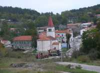

Mune i Žejane – Epicentar brdsko planinske Općine Matulji
 Mi smo u centru, a kamo god da gremo jako nam je dugo. Dugo nam je do prvog susjeda u Istri, dugo nam je do (najbliže) rodbine u Slovenji, a dugo nam je do i centra Matulja, Opatije, Rijeke... Tri kilometra dijeli nas od Europske unije odnosno do Slovenije, a zbog prolongiranja izgradnje malograničnog prijelaza Mune – Starod, umjesto tri za ući u Sloveniju mi moramo prolaziti tridesetitri kilometara. Najzapadnija smo mjesta u Primorsko – goranskoj županji, a živimo "najistočnije". Nemamo vode, što je preduvijet svakog daljnjeg razvoja, a cesta do nas, tih petnaest kilometera od Permana, u očajnom je stanju. Tako nam na početku razgovora kažu predstavnici Muna i Žejana, dvaju, kako i sami kažu, najzapadnijih mjesta u Općini Matulji, na Liburniji i u Županiji.
Malogranični prijelaz razočarao
Mjesta koja su, po nekim parametrima, uvjetno rečeno najzaslužnija što je Općina Matulji od 1. srpnja obuhvaćena Zakonom o brdsko planinskom području, a što joj je donijelo financijske i ine pogodnosti, pa shodno tome očekuju i barem djelomičan povrat tih sredstava u svoje područje, a želja im je samo jedna – dobiti vodu.
Kod nas je veliko razočaranje nastupilo u trenutku kada se saznalo da izgradnje malograničnog prijelaza Mune – Starod neće biti do daljnjeg. Za nas je izgradnja tog prijelaza značila pojednostavljivanje svakodnevice i određenu živost mjestima. Razočaranje je bilo utoliko veće što je prijelaz i službeno definiran u okviru 27 graničnih prijeza između Republike Hrvatske i Republike Slovenije i što smo smatrali da je to rješeno, te da ćemo na taj način možda dobiti i (slovensku) vodu, a na kraju od svega toga ništa. Ostaje nam makadamska cesta koju svi izbjegavaju, kaže nam Josip Doričić, stanovnik Velih Muna i vjećnik u Općini Matulji. Pri tom podsjeća da je petnaestak kilometara ceste koja od Premana vodi prema Munama i Žejanama dobilo asfalt 1975. godine, i to samo jedan sloj iako su navodno bila plaćena dva, a uz to velik je prilog u radu i novcu dalo i svako ovdašnje domaćinstvo te da je zadnji trenutak da se cesta popravi. Jer ta je cesta za četiri stotine stanovnika Muna i Žejana glavna veza sa svijetom.
Dnevno sto kilometra
Ovdje je život lijep, miran i kvalitetan, ali za bilo što pokrenuti u smislu neophodnog daljnjeg razvoja prepreka je daljina koju može "skratiti" samo kvalitetna cesta, kaže nam Vilim Sanković iz Žejana objašanjavajući da svaki zaposleni stanovnik Muna i Žejana, a prosječna starosna dob u oba mjesta je oko četredesetak godina – što znači da najveći dio čini aktivno radno stanovištvo – dnevno prijeđe najmanje sto kilometara. Bez automobila se na da živjeti, svaka ih obitelj ima onoliko koliko ima vozača u kući, a takovom stanju stvari kumuju i sve lošije autobusne veze. No kada nije riječ o radu već o slobodnom vremenu, treba naglasiti da je stanovništvo gornjeg dijela matuljskog kraja okupljeno unutar svojih folkornih običaja odnosno udruge kroz koju njeguju pokladne običaje, "staru kantu" odnosno bugarenje, ples sa cindrom i jedni su od rijetkih koji imaju sat vremena osmišljenog programa kojim u svako doba i na svakom mjestu mogu predstaviti svoju duboko ukorijenjene povijesne običaje i tradiciju.
Udruga "Žejanski zvončari" sastaje se jednom u petnaest dana i to nam je jedina prilika za susrete sa sumještanima budući da Žejane, za razliku od Muna, nemaju ni oštariju. Zahvaljujući radu na očuvanju tradicije i folklora naša je Udruga u predstvaljanju svojih običaja obišla gotovo čitavu Europu, kaže nam Mauro Doričić, iz Žejana. Dodaje da ovdašnje stanovništvo ima brojne poduzetničke ideje, te da se razmišlja o razvoju seoskog turizma i jačanju poljoprivede, no bez vode Mune i Žejane trajno ostaju u neravnopravnom položaju u odnosu na ostale dijelove matuljske općine.
A koliko u finalu košta dovođenje vode u Mune i Žejane koje se nalaze na 630 metara namorske visine znati će se okvirno, kažu nam u "Komunlacu," krajem listopada kada će biti gotova gruba računica temeljena na rujanskom izlasku njihovih stručnjaka na teren kojom je prilikom locirano mjesto za vodospremu.
Piše Dolores Juretić Biondić
Snimio Marin Aničić
October 19, 2003
© 2003 Novi List